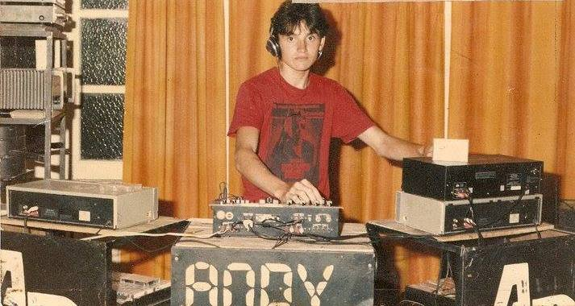
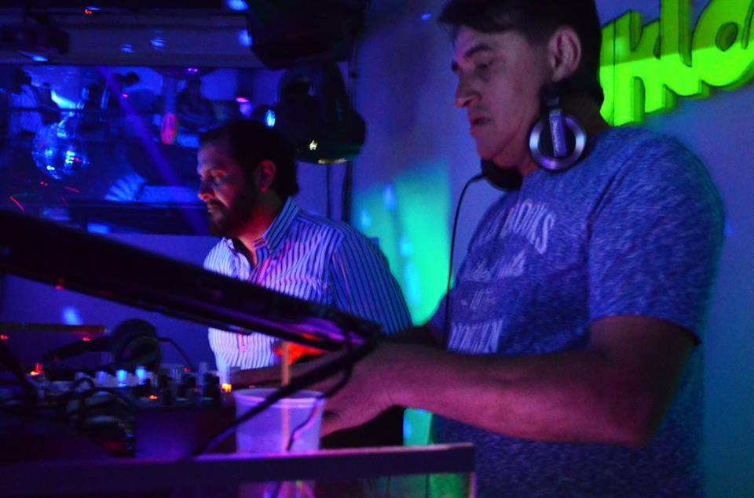
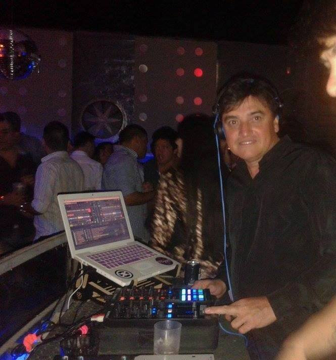

"Another Time" es una radio online curada por el talentoso DJ Kiry Arce, que fusiona éxitos de las décadas de los 80, 90, 00 y música contemporánea para ofrecer una experiencia auditiva única. Desde los icónicos ritmos de Madonna hasta la vibrante energía de Nirvana, la emisora te lleva en un viaje nostálgico a través de los clásicos mientras te mantiene al día con los últimos lanzamientos musicales. Es una opción ideal tanto para los amantes de la música retro como para aquellos que buscan mantenerse actualizados con las tendencias actuales en el mundo de la música.
"Another Time" es la radio online perfecta para los amantes de la música de antaño y aquellos que desean mantenerse actualizados con los últimos lanzamientos. El DJ Kiry Arce, con su amplia experiencia en la industria de la música, demuestra un talento innato para seleccionar las canciones más destacadas de cada década y fusionarlas en una experiencia auditiva única.
Adéntrate en el mundo de la música de los años 80, donde los sintetizadores y los pegajosos ritmos fueron protagonistas. "Another Time" te transportará a una época llena de icónicos artistas como Madonna, Michael Jackson y Queen, mientras disfrutas de los grandes éxitos que marcaron una generación. Revive la energía y el encanto de los clásicos que perduran hasta el día de hoy.
Sin embargo, "Another Time" no se limita a las décadas pasadas. El DJ Kiry Arce se asegura de mantenerte actualizado con los últimos lanzamientos musicales, añadiendo una dosis de frescura y contemporaneidad a la emisora. Descubre nuevos artistas, canciones populares y tendencias actuales mientras disfrutas de una programación musical completa y actualizada.
¡Descarga la aplicación para Android!
Descargar Aplicación